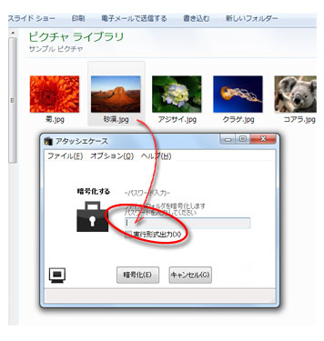
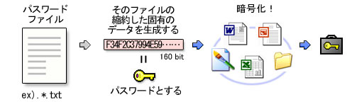
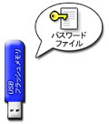
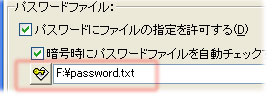
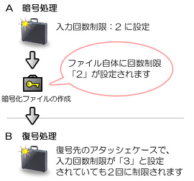
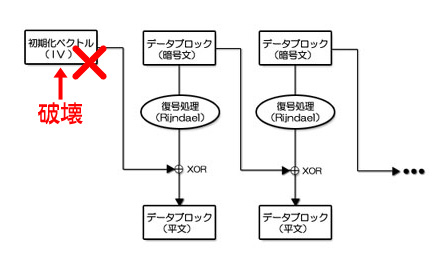

アタッシェケースをより高度な設定をすることで、面白い使い方ができます。

- パスワードにファイルの指定を許可する
チェックすることで、パスワード入力のウィンドウになったとき、文字列を入力する代わりに任意のファイルをドラッグ＆ドロップすることで、 「パスワード」の代わりとすることが可能になります。

この例では「砂漠.jpg」というファイルが、パスワードファイルの役目を果たしています。
内部的には、投げ込まれたファイルの縮約した小さな固有データ（160bit）を生成し、それをパスワードとしています。
なお、ファイルの縮約するメッセージダイジェストアルゴリズムにはSHA-1を使用しています。

たとえば、Word文書を暗号化する際に、My Picruesフォルダなどにある写真画像（*.jpg）をパスワードとして指定すれば、 隠蔽効果が高まります。パスワード文字列を類推される恐れもなくなりますし、 さらにパスワードファイルを別の場所（外部メディアなど）に避けておけば、セキュリティー効果が高まります。
しかし、もしパスワードとして指定したファイルを削除したり、編集・上書き保存してしまった場合は、 パスワードが失われることになります（^^;
たとえ、一文字（あるいは1byte）でも変更を加えてしまったとしても、縮約されたデータは大きく変わる性質を持っています （→詳しくは「SHA-1について」を参照してください）。 パスワードに指定したファイルは、「全体」がキーそのものになっているとお考えください。
使い方を誤るとデータを失うなど、たいへん危険な機能ですので、十分注意し、自己責任で設定してください。 パスワードとして指定するファイルはあらかじめ属性を「読み取り専用」にしておくなどの対策をしておいた方がいいでしょう。
- 暗号時にパスワードファイルを自動チェックする
- 復号時にパスワードファイルを自動チェックする
ここをチェックすると、指定のパスワードファイルを読み込み、そのまま自動で暗号/復号化するようになります。
暗号時と復号時それぞれで、同じパスワードを使う場合は、両方に同じファイルパスを指定します。
パスワードファイルを、外部メディア（ＦＤやUSBフラッシュメモリ等）に保存しておけば、擬似的な物理キーとしても機能します。

|
USBフラッシュメモリに指定のパスワードファイルを保存して持ち歩き、
暗号/復号化のときだけ差し、そこをチェックさせて使えば、
擬似的な物理キーとしても機能します。
|
直接そのファイルを読み込み、パスワードとして設定します。
ただし、パスワードファイル名がそのものズバリここに表示されることになります。他の人が勝手にアタッシェケースを起動し、この設定パネルを見てしまえば、パスワードファイルの在処は丸見えです。ＰＣ上でのセキュリティーを保ちたいのであれば、扱いには注意が必要です。

パスワードファイルの所在はもちろん、ファイル名まで丸見えです．．．
いずれにせよ、常に取り外す外部メディアではなく、ローカルにあるファイルを指定するのはセキュリティー上、オススメはできません。
チェックすると、所定の場所にパスワードファイルがなかった場合でも、エラーメッセージを表示しないようになります。
- 暗号化ファイルの拡張子を偽装する
常に作成される暗号化ファイルの拡張子は、指定の拡張子になります。
ドットも含めて指定します。 .txt といったように。
いかにも単純な偽装オプションですが、ちょっとした隠蔽効果は期待できると思います。
拡張子はちがえど、中身はアタッシェケースファイルです。復号化の際には、 そのままアタッシェケースへドラッグ＆ドロップなどで読み込めば、問題なく復号することができます。 ただ、関連付けはとうぜん利きませんので、ファイルの扱いには注意が必要です。
たとえば拡張子が、*.txtのまま開くと、めちゃくちゃな文字列として表示されます。 拡張子に関連付けられたアプリケーションによっては、読み込み時に不具合を起こすかもしれません。
また、そのファイルがアタッシェケースファイルであることを忘れてしまってもアウトです（^^;
この機能を使うときにも、十分注意し、自己責任でお願いします。
-
パスワード入力回数の制限
暗号化ファイルに、パスワード入力回数の制限を設定します。
注意点として、この設定はアタッシェケース本体に設定されるのではなく、 作成される暗号化ファイル（*.atc, *.exeの両方）に設定されることです。
たとえば、他のユーザーのアタッシェケース（下図でいうと【Ａ】）で、入力回数を「2」と設定して暗号化ファイルを作成、 それを入力回数「3」で設定した自分のアタッシェケース（下図でいうと【Ｂ】）で復号したとき、 先にファイル自体へ設定した「2」回が有効となり、実行されます。

- 暗号化ファイルに入力回数を設定する
パスワードの入力回数（間違えても入力できる回数）を設定します。
注意点として、たとえば「10」と設定した場合、「10回間違えたとき」処理を中止します。
- その回数を間違えたら暗号化ファイルを破壊する
上項で設定された回数を間違えたとき、暗号化ファイルは二度と復号できないよう、自己破壊します。
- この設定を行うと、あなたの大切なデータを失うことになります。 十分注意した上で、自己責任の上で実行してください。
なお、具体的な破壊方法ですが、下図にあるように、暗号化ファイルの先頭付近に格納されているIV部分を破壊します。
いわば、暗号部の最初のブロックを壊してしまうので、それ以降、復号に必要なデータが得られず復旧が困難となります。

Created with the Personal Edition of HelpNDoc: Easily create Web Help sites